Building Cool Things for a Purpose
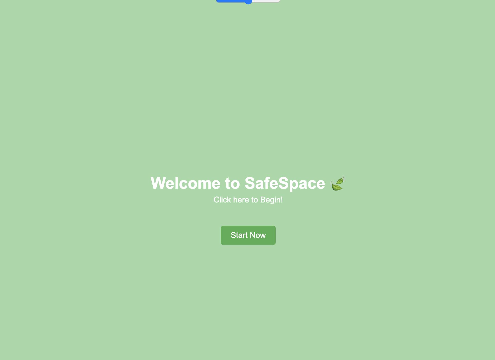
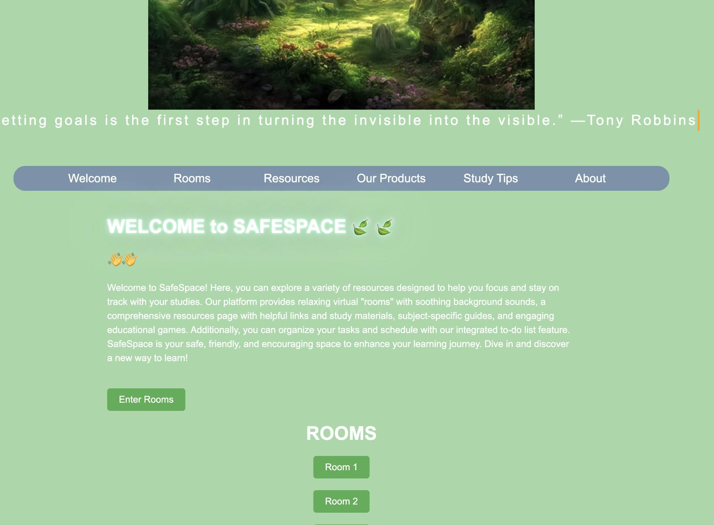
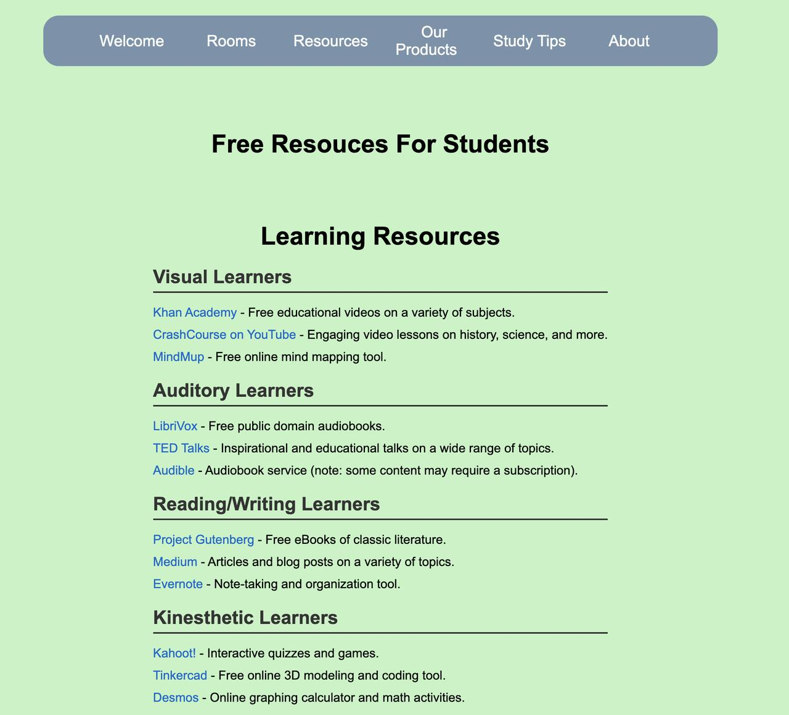
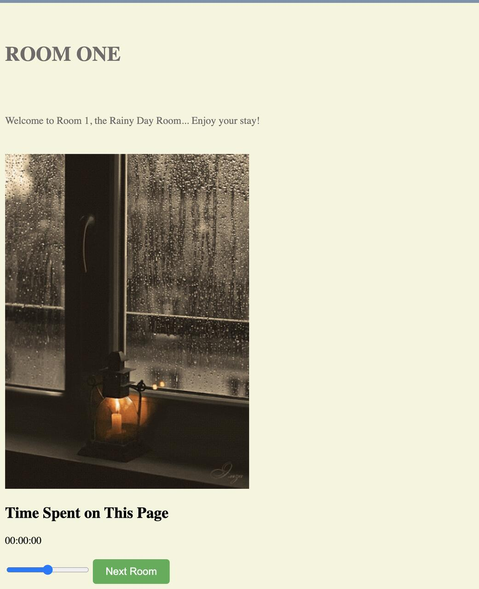
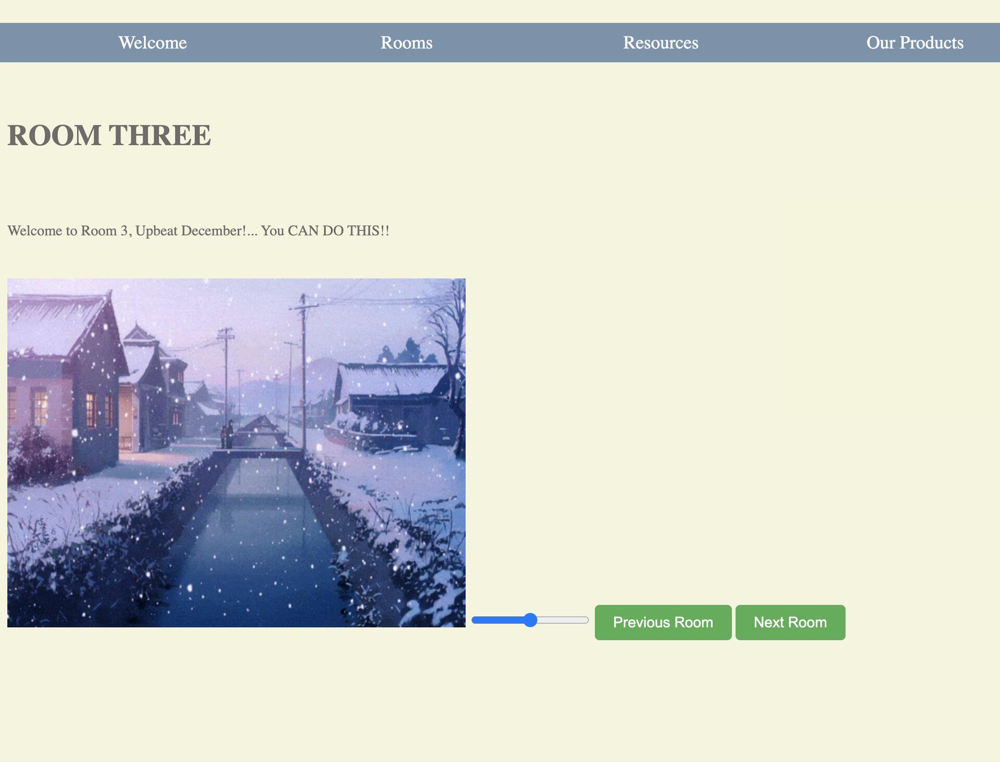
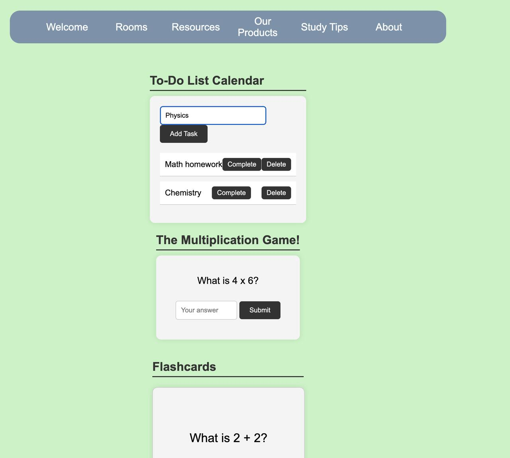
Designed and developed a web platform to help students with ADHD and focus-related challenges stay productive while studying.
Created interactive virtual “rooms” with ambient audio and calming visuals to reduce stress and improve concentration.
Integrated a third-party API to dynamically display a daily inspirational quote, enhancing user engagement.
Implemented task organization features including a to-do list and structured study resources.
Focused on accessibility, user experience, and clean front-end architecture under hackathon time constraints.
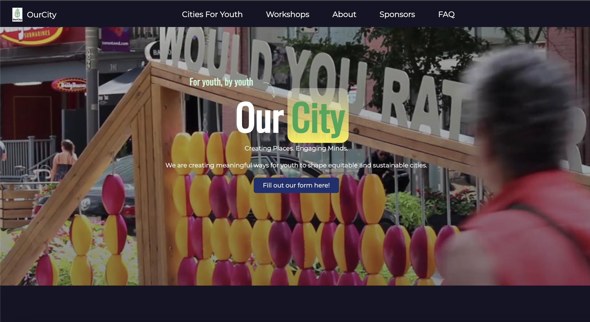
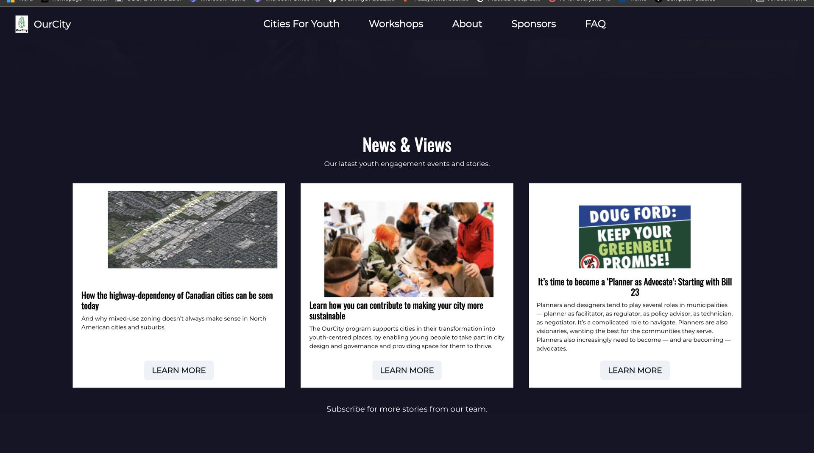
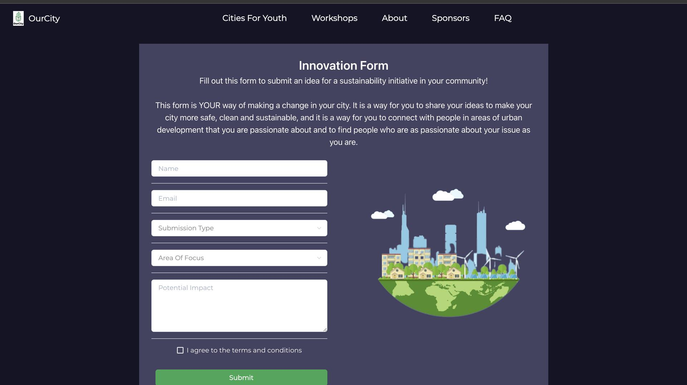
Designed and developed a mission-driven web application to bridge the gap between youth and urban planning, focused on UN Sustainable Development Goal 11.
Created an interactive platform allowing young people to collaborate with municipalities and civic organizations to deliver strategic design objectives.
Integrated a responsive front-end using Chakra UI to ensure an accessible and engaging user experience for diverse youth populations.
Implemented backend architecture with Node.js to handle project ideation, pitching modules, and data-driven civic initiatives.
Focused on technical translation of complex global challenges into a functional, user-centric digital solution under competitive hackathon constraints.
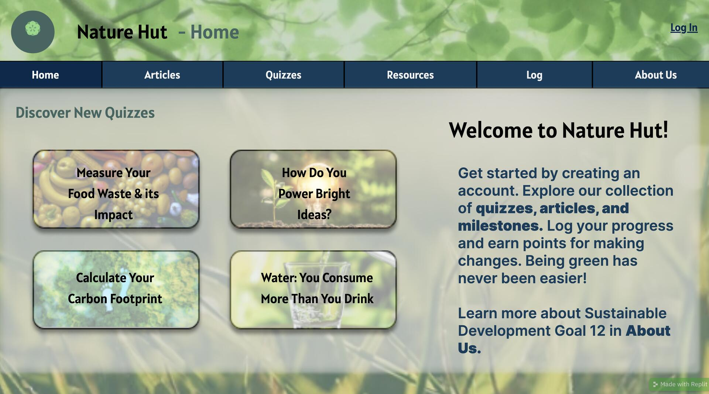
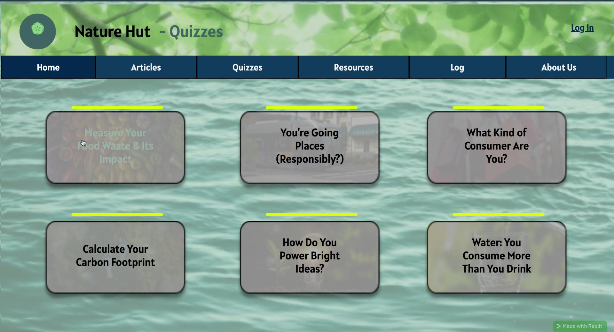
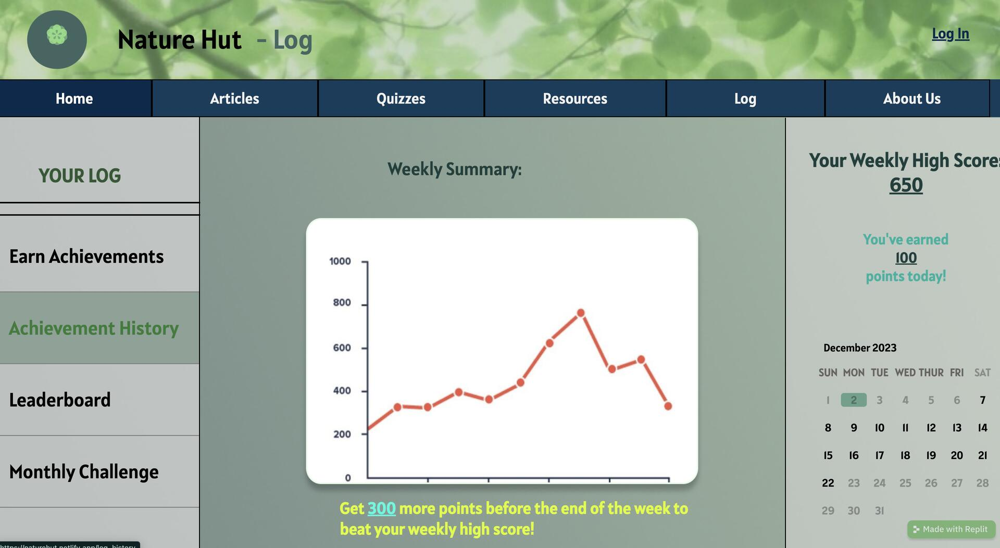
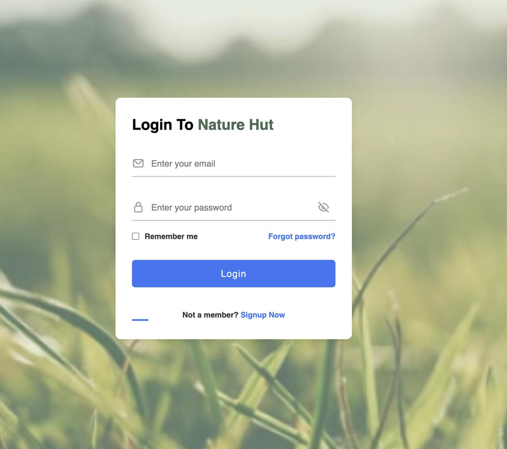
Designed and developed a web-based prototype focused on UN Sustainable Development Goal 12 (Responsible Consumption and Production) to promote renewable lifestyles.
Developed an interactive survey system that dynamically directs users to targeted resources and articles based on their specific areas of environmental urgency.
Implemented a progress-tracking log to help users monitor and improve their sustainable living habits over time.
Collaborated in a team of three to research and integrate educational content regarding social and global challenges.
Built the foundational architecture for a centralized resource hub, combining articles, tools, and user data in a single platform.
Focused on translating the UN SDG framework into a user-friendly digital experience for a non-technical audience.
Tech Stack: HTML/CSS, JavaScript
GitHub: https://github.com/AlizaFaraz/NatureHut